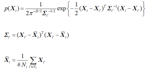

1. 神秘变量与数据集
现在有一个数据集DX(dataset, 也可以叫datapoints)，每个数据也称为数据点。
我们假定这个样本受某种神秘力量操控，但是我们也无从知道这些神秘力量是什么？那么我们假定这股神秘力量有n个，起名字叫
z也起个名字叫神秘组合。
一言以蔽之：神秘变量代表了神秘力量的神秘组合关系。
用正经的话说就是：隐变量(latent variable)代表了隐因子(latent factor)的组合关系。
这里我们澄清一下隶属空间，假设数据集DX是m个点，这m个点也应该隶属于一个空间，比如一维的情况，假如每个点是一个实数，那么他的隶属空间就是实数集，所以我们这里定义一个DX每个点都属于的空间称为XS，我们在后面提到的时候，你就不再感到陌生了。
神秘变量z可以肯定他们也有一个归属空间称为ZS。
下面我们就要形式化地构造X与Z的神秘关系了，这个关系就是我们前面说的神秘力量，直观上我们已经非常清楚，假设我们的数据集就是完全由这n个神秘变量全权操控的，那么对于X中每一个点都应该有一个n个神秘变量的神秘组合
接下来我们要将这个关系再简化一下，我们假设这n个神秘变量不是能够操控X的全部，还有一些其他的神秘力量，我们暂时不考虑，那么就可以用概率来弥补这个缺失，为什么呢？举个例子，假设我们制造了一个机器可以向一个固定的目标发射子弹，我们精确的计算好了打击的力量和角度，但由于某些难以控制的因素，比如空气的流动，地球的转动导致命中的目标无法达到精准的目的，而这些因素可能十分巨大和繁多，但是他们并不是形成DX的主因素，根据大数定理，这些所有因素产生的影响可以用高斯分布的概率密度函数来表示。它长这样：
当
这是一维高斯分布的公式，那么多维的呢？比较复杂，推导过程见知乎，长这样：

不管怎样，你只要记住我们现在没有能力关注全部的神秘变量，我们只关心若干个可能重要的因素，这些因素的分布状况可以有各种假设，我们回头再讨论他们的概率分布问题，我们现在假定我们对他们的具体分布情况也是一无所知，我们只是知道他们处于ZS空间内。
前面说到了一个神秘组合，如果一个数据集X对应的神秘组合完全一样，那么这个数据集就是一个单一的分类数据集，如果是多个，那么就是多分类数据集，但如果是一个连续的组合数据，那么就是一个有点分不清界限的复杂数据集，就好比，我们这个数据集是一条线段的集合，线段的长度是唯一的神秘变量，那么只要长度在一个范围内连续变化，那么这个集合里的线段你就会发现分散的很均匀，你几乎没有办法区分开他们，也没法给他们分成几类，但如果这个长度值只能选择1,3,5，那么当你观察这个数据集的时候，你会发现他们会聚在三堆儿里。如果这个线段的生成完全依靠的是计算机，那么每一堆儿都是完全重合的，但如果是人画的，就可能因为误差，没法完全重合，这没法重合的部分就是我们说的其他复杂因素，我们通常用一个高斯分布来把它代表了。好，我们已经基本清晰了，我们该给这个神秘组合一个形式化的描述了。
假设有两个变量，
那么我们的目标就是优化
这样，f就是那个神秘力量通道，他把这些神秘力量的力度，通过f变成了x变量，而这个x变量就是与数据集DX具有直接关系的随机变量。
设一个数据集为DX，那么这个数据集存在的概率为
其中，
这样我们就直接定义个
好了，其实公式(1)就是我们的神秘力量与观察到的数据集之间的神秘关系，这个关系的意思我们直白的说就是：当隐秘变量按照某种规律存在时，就非常容易产生现在我们看到的这个数据集。那么，我们要做的工作就是当我们假定有n个神秘力量时，我们能够找到一个神奇的函数f，将神秘力量的变化转化成神奇的x的变化，这个x能够轻而易举地生成数据集DX。
从上面的描述里面我们看到，f是生成转换函数，公式(1)不表示这种转换关系，而是这种关系的最大似然估计(maximum likelihood)，它的意思是找到最有可能生成DX这个数据集的主导函数f。
接下来我们回到讨论
注意z的分布我们依然是未知的。
假定我们知道z现在取某一个或几个特定值，那么我们就可以通过Gradient Descent来找到一个
OK，我们还要说一个关键问题，就是我们确信f是存在的，我们认为变量与神秘变量之间的关系一定可以用一个函数来表示。
2. 变分自编码器(VAE)
本节，我们探讨如何最大化公式(1)。首先，我们要讨论怎样确定神秘变量z，即z应该有几个维度，每个维度的作用域是什么？更为较真的，我们可能甚至要追究每一维度都代表什么？他们之间是不是独立的？每个维度的概率分布是什么样的？
如果我们沿着这个思路进行下去，就会陷入泥潭，我们可以巧妙地避开这些问题，关键就在于让他们继续保持“神秘”！
我们不关心每一个维度代表什么含义，我们只假定存在这么一群相互独立的变量，维度我们也回到之前的讨论，我们虽然不知道有多少，我们可以假定有n个主要因素，n可以定的大一点，比如假设有4个主因素，而我们假定有10个，那么最后训练出来，可能有6个长期是0。最后的问题需要详细讨论一下，比较复杂，就是z的概率分布和取值问题。
既然z是什么都不知道，我们是不是可以寻找一组新的神秘变量w，让这个w服从标准正态分布
好，更加波澜壮阔的历程要开始了，请坐好。
我们现在已经有了
我们现在就可以专心攻击f了，由于f是一个神经网络，我们就可以梯度下降了。但是另一个关键点在于我们怎么知道这个f生成的样本，和DX更加像呢？如果这个问题解决不了，我们根本都不知道我们的目标函数是什么。
3. 设定目标函数
我们先来定义个函数 Q(z|DX)，数据集DX的发生，z的概率密度函数，即如果DX发生，Q(z|DX)就是z的概率密度函数，比如一个数字图像0，z隐式代表0的概率就很大，而那些代表1的概率就很小。如果我们有办法搞到这个Q的函数表示，我们就可以直接使用DX算出z的最佳值了。为什么会引入Q呢？其实道理很简单，如果DX是x这个变量直接生成的，要想找回x的模型，就要引入一个概率密度函数T(x|DX)，亦即针对DX，我们要找到一个x的最佳概率密度函数。
现在的问题就变成了，我们可以根据DX计算出Q(z|DX)来让他尽量与理想的Pz(z|DX)尽量的趋同，这就要引入更加高深的功夫了——相对熵，也叫KL散度(Kullback-Leibler divergence,用
离散概率分布的KL公式
连续概率分布的KL公式
也可写成
通过贝叶斯公式
这里不再给P起名，其实Pz(z)直接写成P(z)也是没有任何问题的，前面只是为了区分概念，括号中的内容已经足以表意。
因为
公式(2)是VAE的核心公式，我们接下来分析一个这个公式。
公式的左边有我们的优化目标P(DX)，同时携带了一个误差项，这个误差项反映了给定DX的情况下的真实分布Q与理想分布P的相对熵，当Q完全符合理想分布时，这个误差项就为0，而等式右边就是我们可以使用梯度下降进行优化的，这里面的Q(z|DX)特别像一个DX->z的编码器，P(DX|z)特别像z->DX的解码器，这就是VAE架构也被称为自编码器的原因。
由于DX早已不再有分歧，我们在这里把所有的DX都换成了X。
我们现在有公式(2)的拆分：
– 左侧第一项：
– 左侧第二项：
– 右边第一项：
– 右边第二项：
还有下面这些：
–
–
–
我们再明确一下每个概率的含义：
–
–
–
–
–
–
–
我们的目标是优化P(X)，但是我们不知道他的分布，所以根本没法优化，这就是我们没有任何先验知识。所以有了公式(2)，左边第二项是
右边第一项：
右边第二项:
现在我们对这个公式的理解更加深入了。接下来，我们要进行实现的工作。
4. 实现
针对右边两项分别实现
第二项是Q(z|X)与N(0, I)的相对熵，X->z构成了编码器部分。
Q(z|x)是正态分布，两个正态分布的KL计算公式如下（太复杂了，我也推不出来，感兴趣的看[1]）：
变成具体的神经网络和矩阵运算，还需要进一步变化该式：
OK，这个KL我们也会计算了，还有一个事情就是编码器网络，
第一项是
到此，整个实现的细节就全都展现在下面这张图里了
由于这个网络传递结构的一个环节是随机采样，导致无法反向传播，所以聪明的前辈又将这个结构优化成了这样：
这样就可以对整个网络进行反向传播训练了。
具体的实现代码，我实现在了这里：
https://github.com/vaxin/TensorFlow-Examples/blob/master/examples/3_NeuralNetworks/variational_autoencoder.py
里面的每一步，都有配合本文章的对照解释。
5. 延伸思考
之所以关注VAE，是从文献[4]引发的，由于视觉早期的概念形成对于之后的视觉认知起了十分关键的作用，我们有理由相信，在神经网络训练时，利用这种递进关系，先构建具有基础认知能力的神经网络，再做高级认知任务时会有极大的效果提升。但通过前面神秘变量的分析，我们发现，为了充分利用高斯分布，我们将w替换成了z，也就是说真正的隐变量隐藏在f的神经网络里面，而现在的z反而容易变成说不清楚的东西，这一不利于后续的时候，二来我们需要思考，是否应该还原真实的z，从而在层次化递进上有更大的发挥空间。
[1] http://stats.stackexchange.com/questions/60680/kl-divergence-between-two-multivariate-gaussians
[2] https://arxiv.org/abs/1606.05908
[3] https://zhuanlan.zhihu.com/p/22464768
[4] https://arxiv.org/abs/1606.05579

{kind=link}
{kind=link}
{kind=link}